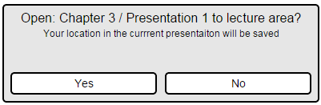

The file manager will display all saved and currently opened lectures. All lectures will be shown in the saved tab. Opened lectures will appear under the opened tab.
Each lecture has a progress bar displaying how far that lecture progressed.
When a user selects a file, the program will highlight the file, as shown in Figure 107.
Figure 107: Selecting file.

Figure 108: Opening confirmation.